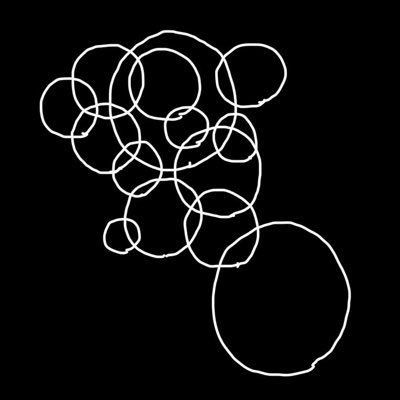

ririsito > home > 外部リンク
|
 よゆか |
イラストをかいています。箱入りのお嬢様です。 Twitter:@dioscalberg pixiv:こちら |
|
kanasimaki |
DTMに励んでいます。アイドルユニット「Myriad + Grace」のファンです。 Twitter:@kanasimaki |
| サイト制作 |
|
よゆか kanasimaki |
©2023 ririsito. All rights reserved.